POWER IN YOU
SYMBOLS
We managed to fuse together the ancient Slavic Symbols imbued with the power of natuer as well as the faith of countless generations, and the jewellers impeccable skill and love for their craft. OBERIG JEWELRY is our precious tale throuh the ages
KOLOVOROT


OBERIG - UNITING
THE PRECIOUS

- Jewellers' impeccable work
- An in-depth understanding of ancient symbolism
- Precius materials of the highest quality
- The warmth of hearts, and lofe for one's craft
- Your OBERIG JEWELERY
The Brand Soul
"The moment that first pendant saw the light of day we knew that we must go on to make jewelery that would not only make or country proud, but taht would also bring joy and happiness to the people wearing it."
Tetiana Kondratyuk, OBERIG's Idea Originator
COLLECTIONS
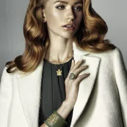
 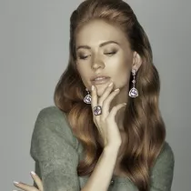
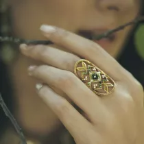
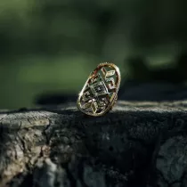
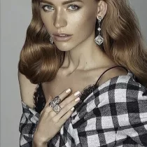
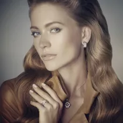
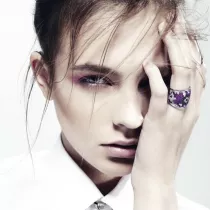
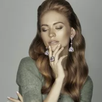
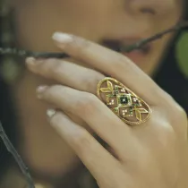
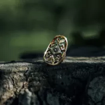
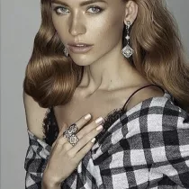
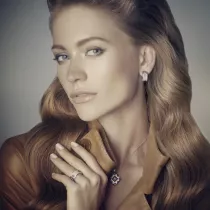
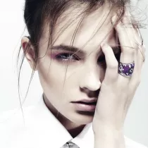
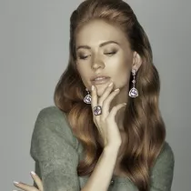
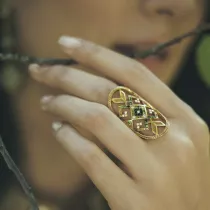
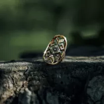
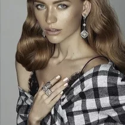
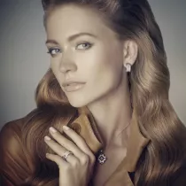
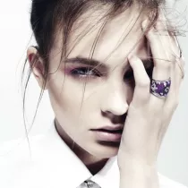